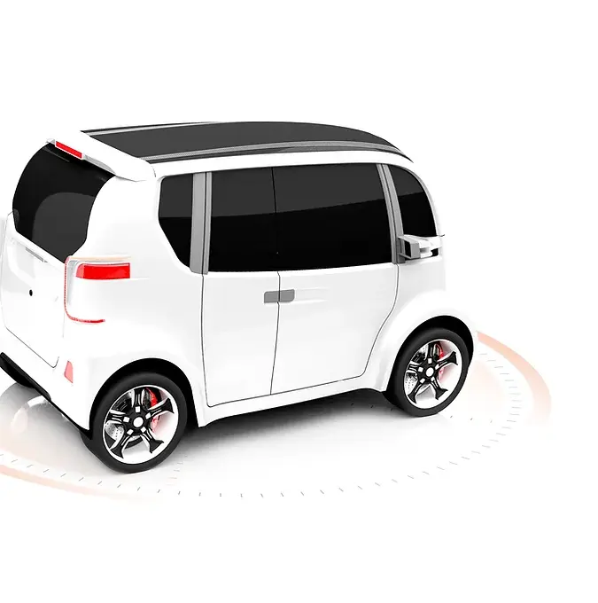

Bienvenidos...
Por suerte o por desgracia la humanidad siempre da con la manera de automatizar cada vez más las tareas habituales y que solemos realizar a diario, y los vehículos de cuatro ruedas no son menos. En AUTONOMIC nos fascina la tecnología incroporada en los automóviles cada vez más "auto". Siéntase libre de navegar por nuestra web y de descubrir información interesante sobre el presente/futuro...
Comenzar

Funcionamiento
Si algo puede llamar la atención incialmente és el CÓMO FUNCIONAN, CÓMO HACEN estos vehículos para ofrecer funciones autónomas
Leer más

Niveles
Cuando hablamos de vehículos autónomos nos referimos a ciertas funiones que ofrecen "cierta" autonomía, es así como en función de las funciones incorporadas se consigue un NIVEL u otro de AUTONOMÍA
Leer más


Este obra está bajo una
licencia de Creative Commons
Reconocimiento-NoComercial 4.0
Internacional.